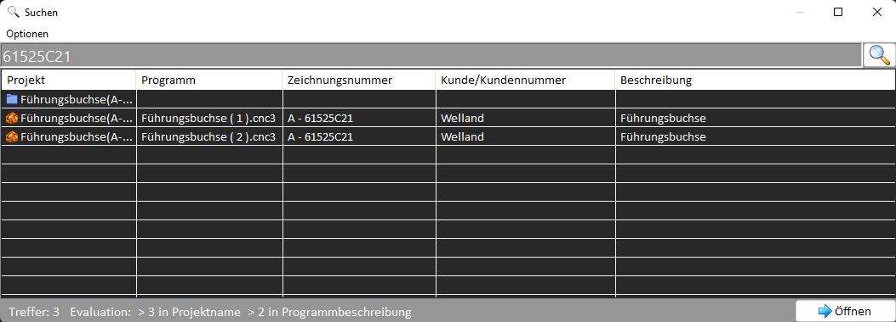

Basics
With this application NC-Files can be managed, organized, edited and archived. Moreover it enables transmitting data via serial interface.
This application is developed especially for EPL2 programs but should also be appropriate for other types of use.
The following application-components are available:
- File-Explorer to organize files.
- Editor with tab-control to edit multiple files at the same time.
- Template-Manager for creation and organization of Snippets.
- Search functionality to search for files and document-properties.
- Serial transmission manager to transmit or receive files.
Filetype
This application uses a special filetype (*.cnc3). With this type it is possible to save tags beside the NC-Content. This Tags could be set by using the document-properties box on the right of the editor. The search function could be used to find specific data within the document-properties. Other text-based filetypes can be imported and exported but not managed.
Title-Menu
The title-menu gives access to global settings, data and information.

The following functions are included:
- Settings of the application
- Help / Manual
- Invokation of the Website
- Invokation of the File-History
File-Explorer
The File-Explorer can be used to organize the Files. Folders and Files can be created, deleted, copied, moved or renamed.
With a double-click the target-file will be opened in the editor.
If a right-click is performed on the file, a context-menu is opened with the options that can be applied on the object.
The toolbar on the top of the explorer also includes all executable functions.

Editor
With the editor, programs can be created. The horizontal toolbar provides known function like open, save, copy, cut and so on.
Moreover files can be exported or transmitted and received using the serial interface.
The vertical toolbar modifies the behavior of the editor. Properties like uppercase letters, automatic numeration, text-color and line-focus can be switched on and off.
Also the complete content of the editor can be formatted and line-numbers can be sequenced.

Using the tab-control, multiple files can be opened and edited at the same time.
Every tab contains a button to open a context-menu with actions that can be performed on the tab.
The path to the current file may be expanded to locate the position in the tree-view of the explorer.
Or the content could be set as a general template. The general template is inserted in every new tab if the appropriate setting is set.
On the right side of the editor, the document-property window is shown with information about the current file.

The document-property tags will be saved together with the nc-content. The search-function enables to search directly for these properties.
Template-Manager
With the Template-Manager, code-snippets can be created and organized.
The usage is done via context-menu (right-click on item) or via toolbar, like in the explorer window.

Templates can be arranged and organized by filters. When a template is to be added, a popup-window will open.
The content for the template could be directly entered into the editbox in the popup-window or inserted with a copy-paste operation.
If some text was previously selected in the main editor, it will be set as the template-content when the popup-window opens.
Search-Function
With the search-function, files can be found and accessed quickly. A classic search for file- and foldernames could be performed as well as a search for the document-properties defined in the document description tags.
The precise search targets can be set up using the settings of the application or with the menu of the search-window. Opening multiple search results is possible and the search-window can remain visible after results are opened.
Serial Data-Transmission
By pressing the buttons for transmit/receive via serial interface a transmission window is opened.
The behavior of the window and the configuration of the interface could be adapted in the app settings.
If the transmit button is clicked, the current content of the active tab is written to the interface.
When the receive button is clicked, the transmission window is being opened and the module waits for incoming data.
If the reception is complete the data could be set to the current active tab.